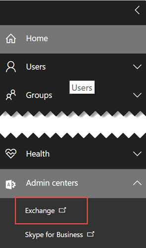
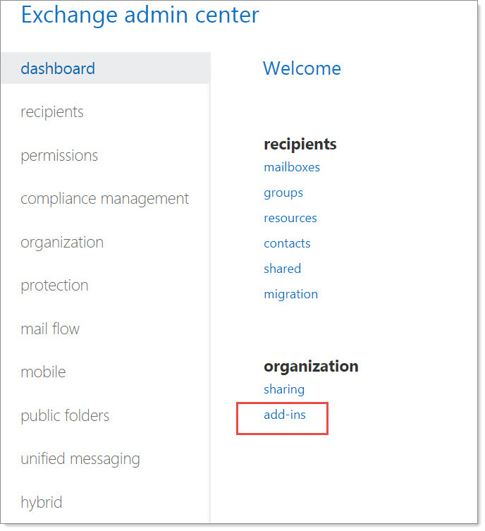
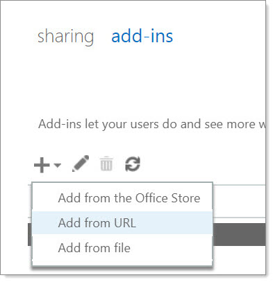
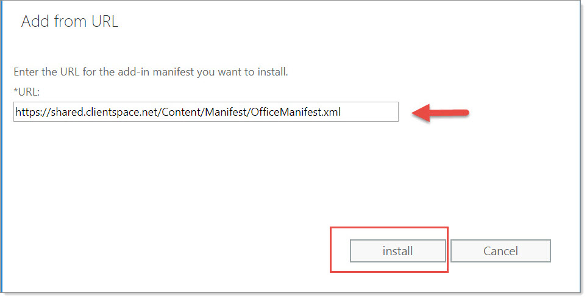
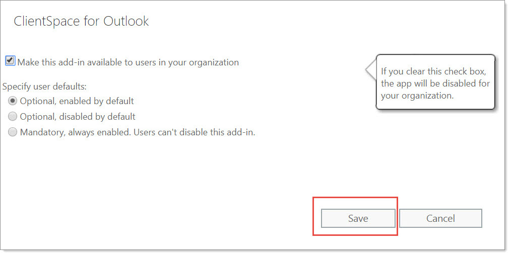

To begin using the Outlook add-in in your environment, you need to publish the add-in through the Exchange Admin > Manage Add-ins. This topic provides step-by-step instructions on installing this add-in in the Office 365 environment.
Microsoft now supports publishing Outlook Office add-ins through the Microsoft Store. This method of centralized deployment allows you to define groups that can use the add-in and is recommended for clients that use a hosted environment from a third-party IT provider. When using centralized deployment to publish through the Microsoft store, the provider should select the URL method of publishing and use the URL provided in this article. It is critical before proceeding with any method of publishing Outlook Add-ins that the server through which you will publish the add-in is up to date with the latest Microsoft service packs and updates for exchange. Instructions for centralized deployment through the Microsoft store may be found here.
You must use the following instructions for distributing the Add-In though Exchange Admin when publishing the Outlook Add-In. Any deviation from this procedure can produce unexpected results and falls outside the scope of support for this product.
Per Microsoft, the Outlook add-in deployment requires:
Office 365, Exchange Online, or Exchange Server 2013 or later
Outlook 2013 or later
It is also highly recommended that you apply the latest service pack / patches for Exchange server to ensure you have Microsoft's latest deployment code. More details about this and the technology used for these add-ins can be found here: https://docs.microsoft.com/en-us/outlook/add-ins/
To publish the Outlook add-in through Exchange Admin:
Open the Office 365 Admin Center and navigate to Admin Centers > Exchange.

In the Exchange Admin Center Dashboard, under Organization, select add-ins.

You are presented with a list of currently available add-ins.
To add the new add-in to this list, click + and select Add from URL.

In the Add from URL dialog, complete the URL field using the following web address:
https://shared.clientspace.net/Content/Manifest/OfficeManifest2.xml

Then click Install.
At the options selection screen, select the Make sure this add-in available to users in your organization option.
Select the appropriate install option for your environment.

Available options are as follows:
Optional, enabled by default (*recommended): Users of Outlook via ofOffice365 online will automatically have access to the add-when using Outlook on the web. When enabled on their online account, the add-in will automatically be installed to their desktop Outlook. Desktop-only users will need to manually install the add-in using these instructions (click link to open). Once installed they may uninstall.
Optional, disabled by default: Users of both Office365 online and desktop Outlook will need to manually install the add-in using these instructions (click link to open). Once installed they may uninstall.
Mandatory, always enabled: Users of Outlook via Office365 online will automatically have access to the add-when using Outlook on the web. When enabled on their online account, the add-in will automatically be installed to their desktop Outlook. Desktop only users will need to manually install the add-in using these instructions (click link to open). Users will be unable to uninstall the add-in.